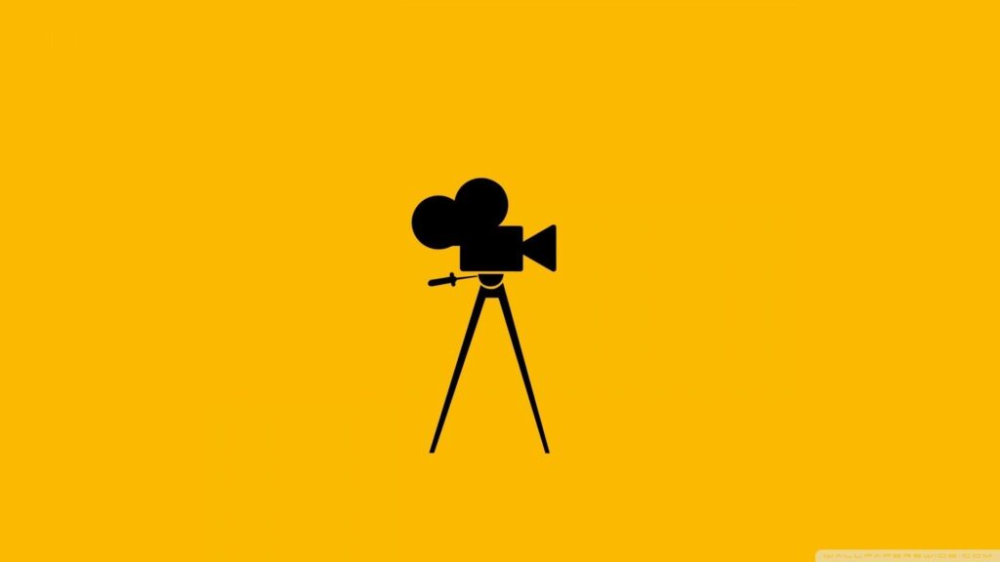
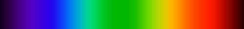
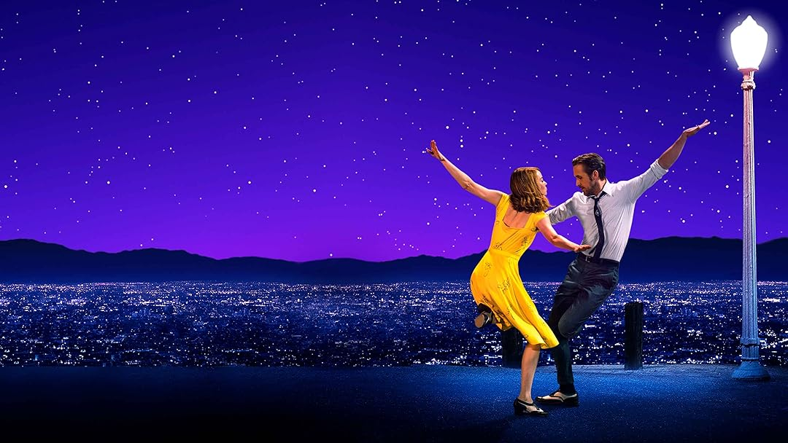
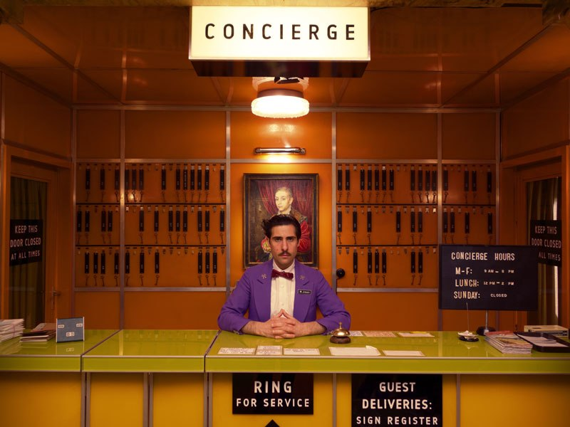
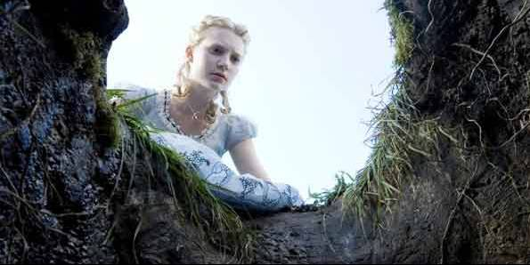
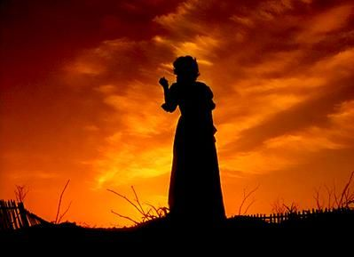
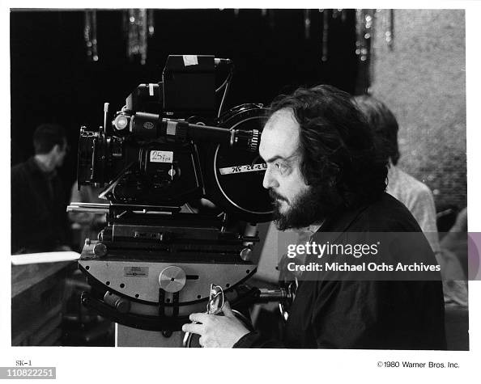

FOTOGRAFIA NO CINEMA

~Sendo um dos principais sentidos usados ao assistir um projeto de filmagem a visão,
como a fotografia pode impactar os sentimentos dos telespectadores?~
Existem diversos fatores dentro da fotografia de um filme que trazem as emoções, as cores a composição e
movimento da câmera... Vamos explorar cada um deles
^^^ CORES ^^^

Talvez seja conhecimento comum, porêm cada cor, seu tom e intensidade nos levam a sentir algo,
um sentimento que acontece inconcientemente ao vê-lá.
Por exemplo a cor vermelha, pense em um sentimento que você relacionaria a ela,
raiva? paixão? terror? Todos juntos?, esse é o objetivo! É uma das principais estratégias usadas No cinema
Filmes que focam nessa estratégia seriam:
. *▪︎LA LA LAND▪︎* .

Esse é o perfeito exemplo da teoria de cores no cinema, La la land é uma explosão de cores com simbologia e emoções em seu potencial máximo
A personagem principal, Mia, é uma atriz fracassada veste principalmente azul, com sua vida monótoma e calma.
Ela conheçe Sebatian, Vermelho, vindo de sua paixão e personalidade exêntrica,
um sonhador que é apaixonado por Jazz, que espera reviver esse estilo de música nas ruas.
Quando começam a se conhcer o branco predomina, e na sua União o Roxo aparece em ambos.
A intensidade das cores também tem um grande papel, cores mais apagadas aparecem em sua queda e momentos mais deprimidos....
Sem spoilers, em?
*▪︎O Grande Hotel Budapeste▪︎*

Wes Anderson (diretor) usou a cor para mostrar constraste, falta de pertencimento, linha do tempo alternativa e personalidade.
Exemplo:

^^^ COMPOSIÇÃO ^^^

Os elementos em si de cada cena e cada take são, dependendo da meticulosidade do diretor, cauculados e planejados,
se for o objetivo dar poder ou mostrar a superioridade/controle de algum personagem ou coisa, a câmera é posicionada
por baixo, e o foco é filmado de baixo pra cima, quando queremos mostrar que um personagem se sente.. em paníco,
um momento em que precisa pensar só consigo mesmo, se usa o close-up para focar em suas expressões faciais.
Outro motivo para a escolha de certas composições com a câmera é a identidade do diretor, ou da obra em particular
o meu exemplo para isso são e o caso anteriror são:
*▪︎O Vento Levou▪︎*

Filme de 1939, acompanhava a vida de uma garota jovem de família nobre, mimada, que sofre os horrores da guerra
Ele explora como o ser humano pode mudar e o que no desespero nos levamos a realizar. Nesta cena Scarlet acha uma cenoura e com fome
come direto da terra, naquele momento testemunha jurando jamais passaria fome novamente, mostrando sua força na hora e um futuro
superação e luta.
*▪︎Stanley Kubrick▪︎*

Ele usa muito de simetria, procura apresentar todos #2 os elementos em um único take, usa de simetria e formatos geométricos como
identidade própria e reconhecível.
Vencedores do Oscar de melhor fotografia a partir dos anos 2000 até a premiação mais recente
- 2001: Peter Pau ( O Tigre e o Dragão )
- 2002: Andrew Lesnie ( O Senhor dos Anéis: A Sociedade do Anel )
- 2003: Conrad L. Hall ( Estrada para Perdição )
- 2004: Russell Boyd ( Mestre dos Mares: O Lado Mais Distante do Mundo )
- 2005: Robert Richardson ( O Aviador )
- 2006: Dion Beebe ( Memórias de uma Gueixa )
- 2007: Guillermo Navarro ( O Labirinto do Fauno )
- 2008: Robert Elswit ( Sangue Negro )
- 2009: Anthony Dod Mantle ( Quem Quer Ser um Milionário ?)
- 2010: Mauro Fiore ( Avatar )
- 2011: Wally Pfister ( A Origem )
- 2012: Robert Richardson ( Hugo )
- 2013: Claudio Miranda ( As Aventuras de Pi )
- 2014: Emmanuel Lubezki ( Gravidade )
- 2015: Emmanuel Lubezki ( Birdman ou (A Inesperada Virtude da Ignorância) )
- 2016: Emmanuel Lubezki ( O Regresso )
- 2017: Linus Sandgren ( La La Land )
- 2018: Roger Deakins ( Blade Runner 2049 )
- 2019: Alfonso Cuarón ( Roma )
- 2020: Roger Deakins ( 1917 )
- 2021: Erik Messerschmidt ( Mank )
- 2022: Greig Fraser ( Duna )
- 2023: James Friend ( Nada de Novo no Front Ocidental )
- 2024: Hoyte van Hoytema ( Oppenheimer )
- 2025: Lol Crawley ( O Brutalista )
- 2026: Outono Durald Arkapaw ( Pecadores )
document.addEventListener("DOMContentLoaded", () => {
const indice = document.getElementById("indice");
const titulos = document.querySelectorAll("h1, h2, h3");
const links = [];
titulos.forEach((titulo, index) => {
// Cria um identificador para cada título
if (!titulo.id) {
titulo.id = `secao-${index + 1}`;
}
// Usa o texto do título como tópico
const texto = titulo.textContent.trim().replace(/\s+/g, " ");
const link = document.createElement("a");
link.href = `#${titulo.id}`;
link.textContent = texto;
link.classList.add(`nivel-${titulo.tagName.substring(1)}`);
// Navegação suave ao clicar
link.addEventListener("click", (evento) => {
evento.preventDefault();
titulo.scrollIntoView({
behavior: "smooth",
block: "start"
});
history.replaceState(null, "", `#${titulo.id}`);
atualizarAtivo(titulo);
});
indice.appendChild(link);
links.push({ titulo, link });
});
function atualizarAtivo(tituloAtual) {
links.forEach(({ titulo, link }) => {
link.classList.toggle("ativo", titulo === tituloAtual);
});
}
// Destaca automaticamente o título visível
const observador = new IntersectionObserver((entradas) => {
const visiveis = entradas
.filter(entrada => entrada.isIntersecting)
.sort((a, b) => a.boundingClientRect.top - b.boundingClientRect.top);
if (visiveis.length > 0) {
atualizarAtivo(visiveis[0].target);
}
}, {
rootMargin: "-10% 0px -75% 0px"
});
titulos.forEach(titulo => observador.observe(titulo));
});